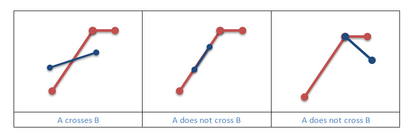
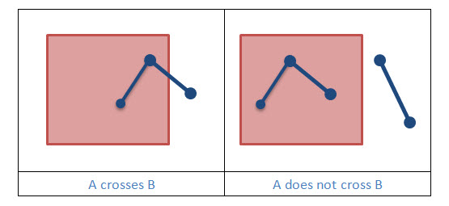

Two polylines cross if they meet at points only, and at least one of the shared points is internal to both polylines. A polyline and polygon cross if a connected part of the polyline is partly inside and partly outside the polygon.
|  |
|  |
Example 1: Does Geometry A cross Geometry B?
static boolean geometryCrosses(Geometry geometryA, Geometry geometryB, SpatialReference sr)
{
boolean crosses = OperatorCrosses.local().execute(geometryA, geometryB, sr, null);
return crosses;
}